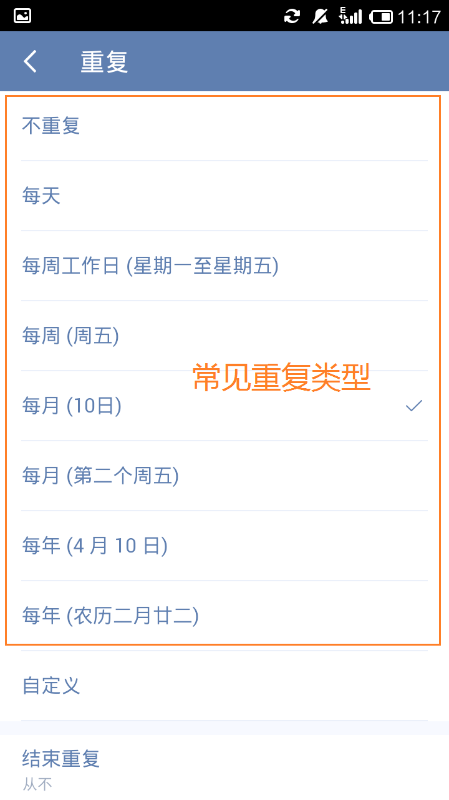
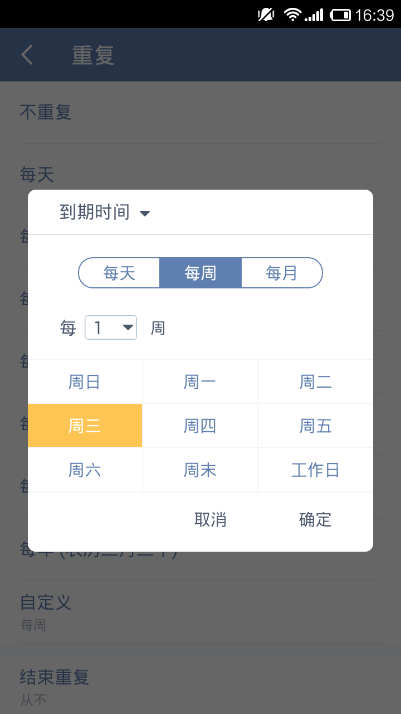
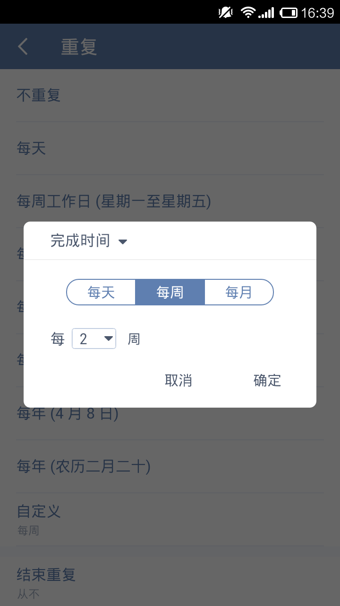
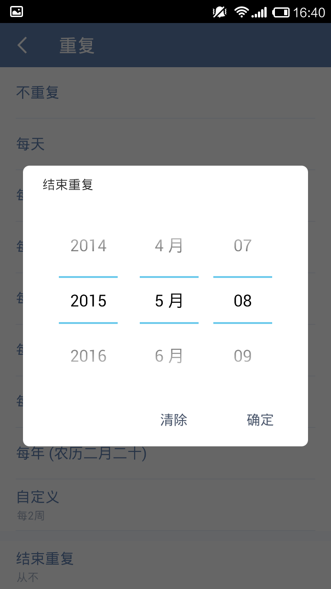

创建一个新的任务之后可以给它确定一个目标完成的时间。当这个任务是类似每天、每月或者是每年这样重复出现的，我们就可以选择给它设置一个重复周期。
滴答清单根据几种常见的重复类型，可以根据需求快速选择按每天/周/月/年来重复。

如果常见重复不能满足自己的需求，可以尝试设置自定义重复。 自定义重复中有两种不同的重复类型。
选择自定义重复，只需进行以下操作：
这里有两种重复类型供我们选择：
到期重复：是指当前时间到达设置的时间就会提醒的重复类型，是我们常说的重复类型。提醒的时间是固定规律的，不会因为自己的完成进度还变化。
例子：小明需要每周五下午安排下周工作，所以设置一个每周五下午都会提醒的到期重复。
小技巧:尝试设置每周的周三和周五提醒，每月的14、16和20号提醒看看。

完成重复：是指上次任务完成后再开始计算下次提醒时间的重复类型。再次提醒的时间会因为自己所完成的时间而改变。
例子：小明想要每三天去一次健身房跑步，这一次是星期二，那么下一次会在星期五提醒他；但他星期五没有去成，星期日完成了这个任务，下一次的提醒时间是星期三，而不是星期一。

可以选择「永不」结束重复任务或者「按日期」结束重复任务。
按日期：设置一个重复任务不再执行的日期，到了该日期，完成任务后不会再自动创建下一周期的任务。
